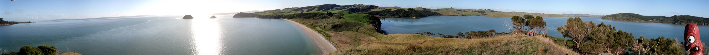

Oneriri Station is a privately owned Beef and Sheep farm of 3,500 hectares situated on a Peninsula on the shores of the Kaipara Harbour, 1.5 hours north of Auckland. The Station is at the confluence of three salt rivers, has approximately 45 kilometres of coastline and 300 hectares of regenerating native forest with large tracts of kauri up to 500 years old. Oneriri Station has 2,600 hectares of effective farmland. The landscape is rolling to hill country with well formed private roads. Oneriri Station carries 6,500 breeding ewes and 850 breeding cows.
